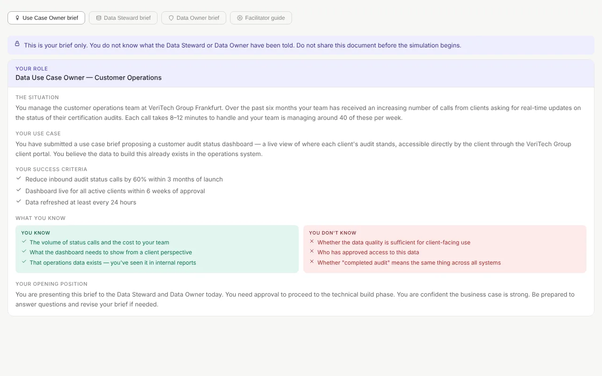
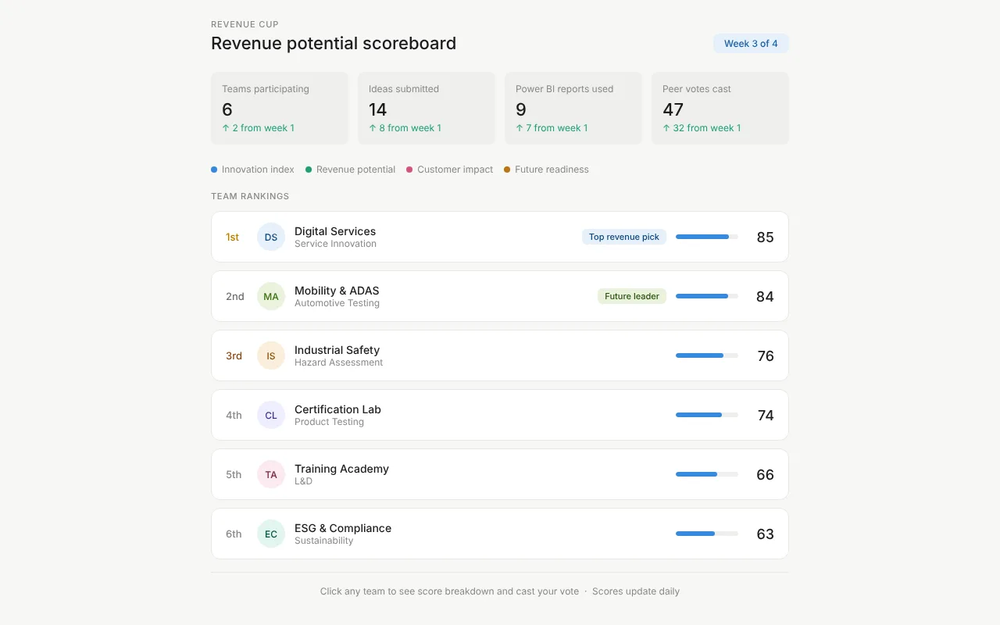
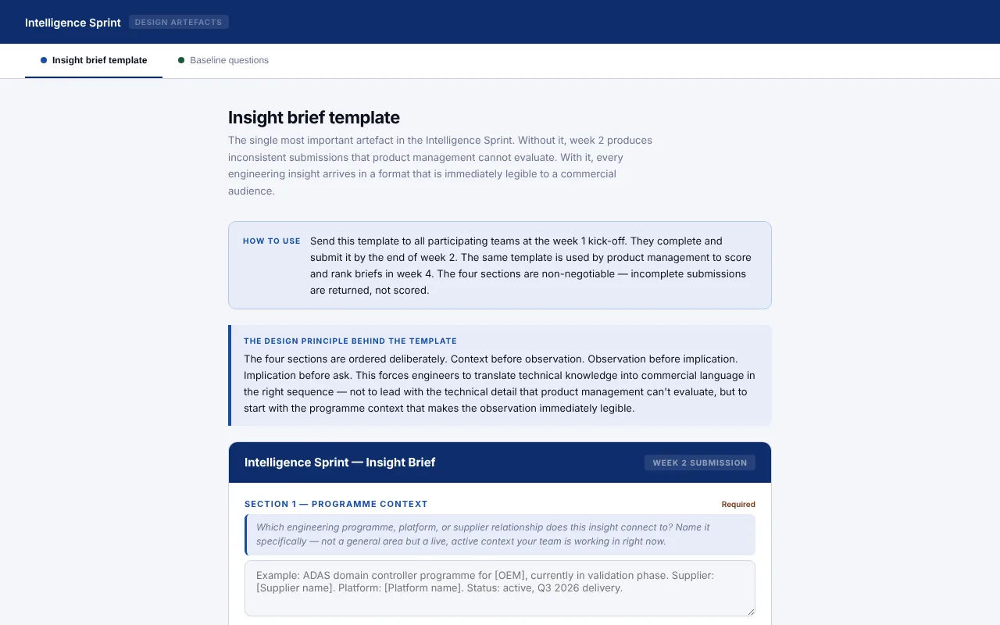

I'm Keithan Cokbilir, a learning experience designer in Ingolstadt. I start from the performance problem, map the decisions people actually face, and build working prototypes you can click through before anyone sits in a session.

Corporate L&D, data governance
Three people get new data roles and a title — but no idea which decisions are now theirs. I designed role-based learning journeys that prepare them for their first month on the job.

A four-week team challenge that gets technical specialists to share commercial ideas — and to use Power BI to back them up.
Read the case study
A structured sprint that helps engineers turn field observations into briefs product managers can act on.
Read the case studyAll three are concept projects for fictional clients: fully designed with working artefacts, not yet delivered. Each case study says what I would measure to prove it worked.
I've spent more than ten years helping adults learn at work — teaching Business English at Inlingua in Ingolstadt, then coaching executives on communication in China from 2022 to 2025.
That work taught me that the gap is rarely knowledge alone. It's usually confidence, the environment, and a reason to act. So I design for the moment people have to use what they've learned, and I measure whether their behaviour changed — not whether they finished a course.
I work with L&D teams, e-learning agencies and training providers — on site in Ingolstadt and Munich, or remotely. Tell me about your audience and what people should be able to do afterwards.